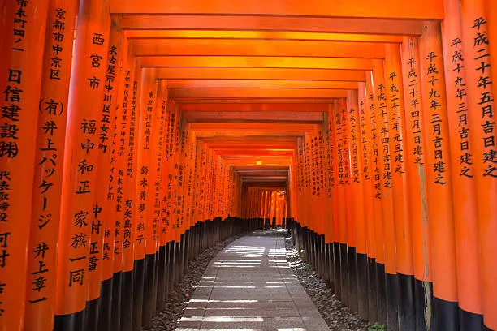
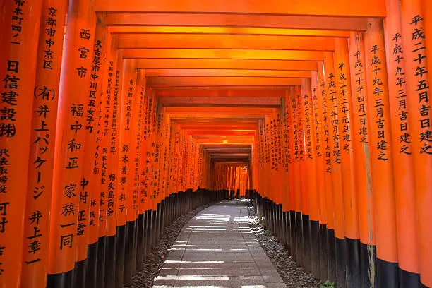

History
Fushimi Inari Shrine is one of the most famous and important Shinto shrines in Japan, located at the base of Mount Inari in Kyoto. It is dedicated to Inari, the Shinto deity of rice, agriculture, and prosperity, making the shrine a popular destination for people seeking success in business and good fortune. The shrine is especially well known for its thousands of bright red torii gates that form long pathways leading up the mountain, creating a unique and iconic landscape
The shrine was established in the early 8th century and has played a significant role in Japanese religious life for over a thousand years. Throughout history, merchants and individuals donated torii gates as offerings to Inari, believing this would bring blessings and prosperity. Each gate is engraved with the name of the donor and the date of donation, reflecting centuries of devotion.
As visitors walk through the torii paths, they encounter smaller shrines, fox statues, and peaceful forest scenery. Foxes are considered messengers of Inari and are often depicted holding symbolic items such as keys or rice sheaves. Today, Fushimi Inari Shrine remains an active place of worship as well as one of Kyoto’s most visited cultural landmarks.
- Location: Fushimi Ward, Kyoto, Japan
- Year Built: 711 AD
- Religion: Shinto
- Famous Feature: Thousands of vermilion torii gates
- Dedicated Deity: Inari (god of rice and prosperity)